everything I’ve learned from running Manifest
Last updated 2026-07-02
About two months ago, after helping out at the West Coast EA retreat, before my supposed flight back to Chicago, Saul gave me a pitch on becoming the co-organizer of Manifest. I was vaguely familiar with the conference having previously read rachel’s post from running manifest 2024, remembering Agnes Callard telling me that “the people there are very fun to hang around”, and otherwise had no understanding of what it entailed.
Prior to this, I was in my freshman year in university. The top of my daily activities included arguing with classmates, attending classes, writing essays, attending office hours, and the greatest responsibilities I held loosely involved ensuring my grades passed an arbitrary bar I had set for myself.
Given that I had nearly zero relevant experience, have never worked a job in my life, and was suddenly trusted in organizing this big thing happening in like, 8 weeks; I was rather nervous. Retrospectively speaking, I think Manifest this year went quite well! And this has been one of the most memorable and educational ~2 months of my life thus far.
Here, I will try to write down some of my learnings and thoughts. This doc is by no means complete, I can probably write 5-10x in length, but here are some incomplete thoughts:
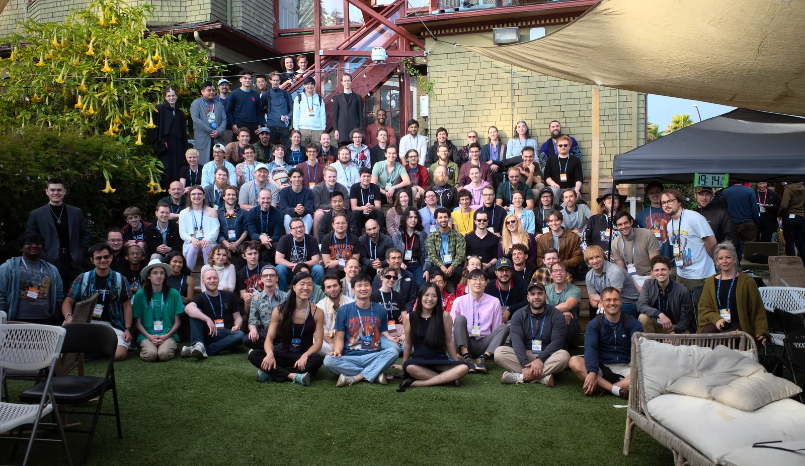
General learnings
Also can be titled “Discovering that many of the cliches are true via real world feedback loops”
There are all of these cliches people talk about all the time. It is tempting and easy to argue against them when operating in a sandbox. “What a cliche” often comes with a negative connotation. Discussions are often rewarded for novelty. Here is an incomplete list of cliches that I now vastly changed my opinion about / internalized via real world feedback loops.
Consequences are in fact great means for learning lessons
- realizing that there are outcomes I sincerely preferred over others, and understanding how different actions led to different outcomes.
- Realizing not dropping balls is very important when there are real stakes / when the consequences of dropping a ball is something that is terrible by my own light
- During the all hands meeting the night before the event, aound 1 AM, I realized that I had messed up something such that none of the sponsor marketing materials were going to arrive in time. (Much as this was very bad and entirely my fault and I was feeling terrible neither Austin nor Winter assigned me any blame, thank you.) (In the end I did succeed in ordering last minute banners. Thanks to How I buy things when Lightcone wants them fast — LessWrong and a printer from redwood city)
- I think I will never make such mistake again—and this was extremely effective in learning my lesson in “it is really important to ensure no major balls are getting dropped”
- Realizing not dropping balls is very important when there are real stakes / when the consequences of dropping a ball is something that is terrible by my own light
80 20 rule
In school one is often rewarded for the last 5% improvements
- For my experience in school, aiming for all As meant something like “doing school work nearly all of my waking hours” where as for all Bs, I could probably do a full time job on top of school. The time to return ratio is incredibly non linear here!
- GPAs, which, as you must already know, is the sole determinator of my lifes worth, is calculated roughly like this: If I received mostly As and A minuses, this rounds to a 3.7-4.0 GPA. If I received mostly B and B+, this rounds to a 3.0-3.3 GPA, at which point, I might as well just….
For your entertainment this was my screen saver in highschool
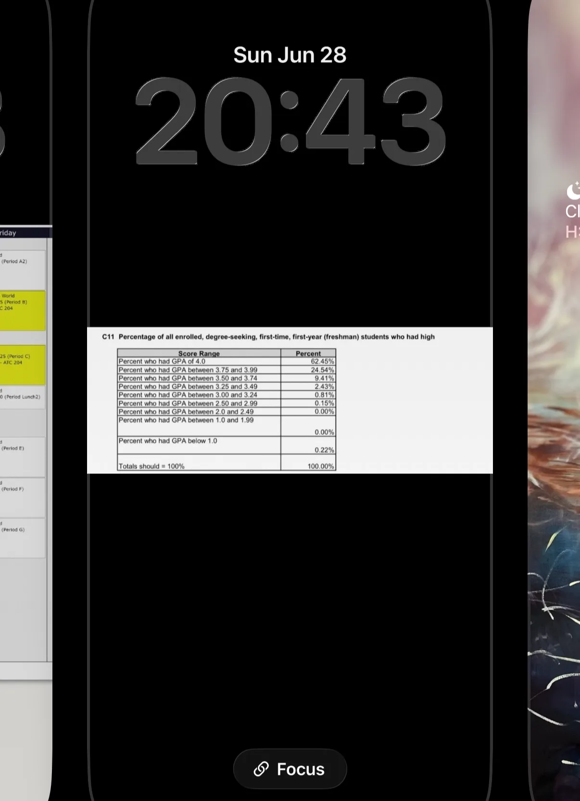
Common Data Set GPA average for all admitted students to the university I wanted to attend. (One really is punished for not embodying the school world logic) At school you REALLY rewarded for the final 5% improvements.
I definitely spent way too much time on the final-5%-improvements at the start of this job.
Todo: internalize Half-assing it with everything you've got
but sometimes the 5% improvements are really fun. (In these cases I’ve learned to honestly acknowledge that I am choosing to do these things, because they are fun and I want to, rather pretending that they are, in fact, the best attendee-experience-improvement / time-cost decision. This habit has also been helpful for developing better task prioritization habits)
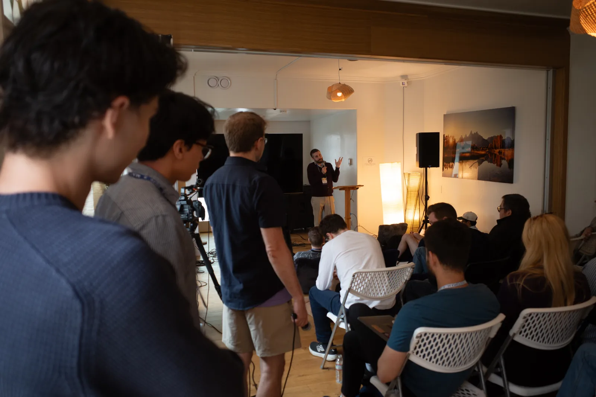
Was DIY-ing printed name badges (instead of having them write it themselves) for last minute ticket purchasers the best use of my time evening before the event? Definitely not. But it was really fun.
Work does indeed expand to its allotted time
- developed a better sense for about how long it actually takes to do something (even when work is not actively expanding to its allotted time)
- in the beginning, I quite consistently underestimated the amount of time it takes me to complete tasks, which caused (or in expectation would have caused) a good amount of inconvenience for people working with me
In all these ways - by the division of labour; the supervision of labour; fines; bells and clocks; money incentives; preachings and schoolings; the suppression of fairs and sports — new labour habits were formed, and a new time-discipline was imposed. It sometimes took several generations (as in the Potteries), and we may doubt how far it was ever fully accomplished: irregular labour rhythms were perpetuated (and even institutionalized) into the present century, notably in London and in the great ports.
- in the beginning, I quite consistently underestimated the amount of time it takes me to complete tasks, which caused (or in expectation would have caused) a good amount of inconvenience for people working with me
taking notes / keeping track of things / documentation
- meeting notes are so useful (thank you, Austin, for causing me to now have this habit)
- I wish I started my “everything I learned on this job” doc sooner and took more notes during the job.
- wow Manifold’s notion page and documentation habit is so useful
- some significant parts of the emails I’ve sent out to the attendees were largely copied from the emails sent out in the past
- I also read a bunch of the meeting notes, brainstorming docs, event timelines, attendee emails, feedback forms, etc. from previous years. They were super super helpful. Thank you Rachel, Rachel, Saul, Austin, and David
sending better emails
- I remember being educated by a professor in school for better email conventions
- I have realized that in fact, these habits are not universally applicable
- https://sashachapin.substack.com/p/how-to-be-less-neurotic-about-getting
- Standing Invitation | Kalzumeus Software tips for emailing busy people, from Austin
- It Is Your Responsibility to Follow Up - Alexey Guzey also from Austin
- came to the (shocking) realization that I can just send emails phrased in a tone that makes me sound like a real human
- Realized email length and prose complexity don't track quality (if not sometimes inversely related)
- Got many reps in writing concise + skimmable + polite emails (thank you Austin again)
On becoming a better writer
writing instructions vs. philosophy papers
Usually, when writing papers, one is explicitly graded on things like intricacy of logic, complexity of argumentation, and fluency of prose (and on not using AI), while often being implicitly rewarded for not making the language as clear, concise, and simple as possible.
However, I have realized that when it comes to writing things that have clear instrumental purposes, unclear communication comes with real costs. Sometimes, these consequences might look like:
- “the cool person that I really really want to meet will not respond to my conference invitation email because it was too long and confusing”
- No one can find their ticket QR code at day-of check-in because I didn't explain it clearly in the email
- Every attendee may end up having to stand in line, under grating sunlight, wrestling their mobile device to pull up the code, for 10 minutes.
- With some simple BOTEC, (800 attendees)x(10 minutes)=a bad email may cost 133.33 conference hours
eg. I now have to respond to a bunch of emails asking me questions that I could have entirely avoided, had I made my initial email clearer
eg. on making the talk/events intake form not confusing:
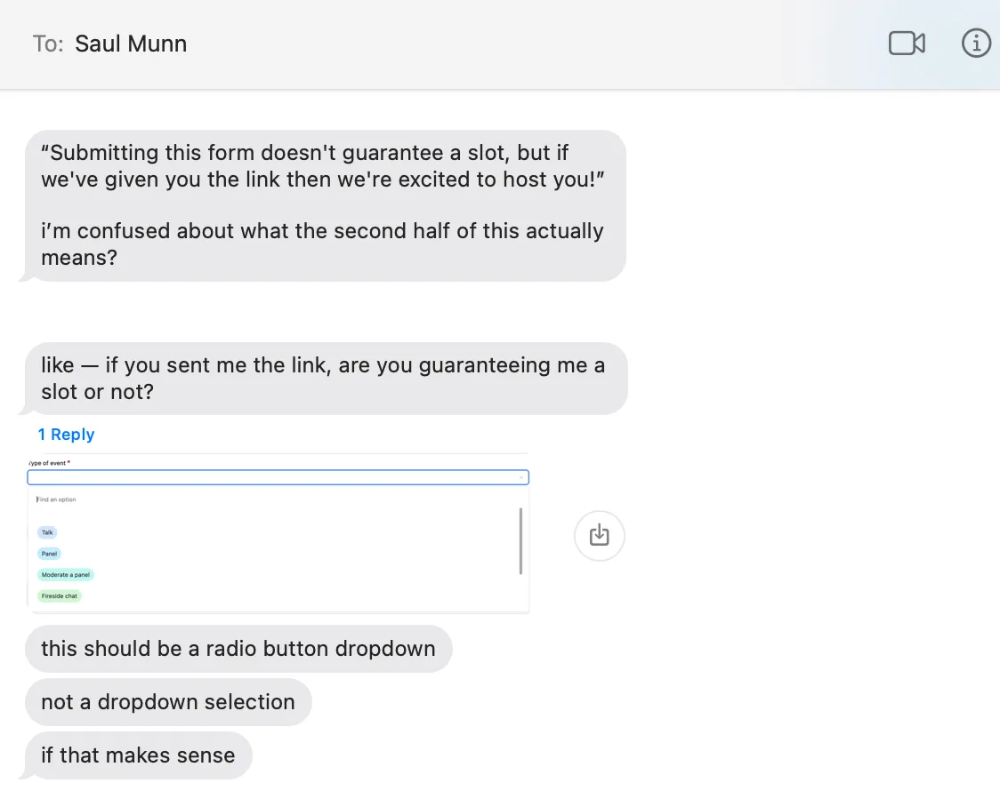

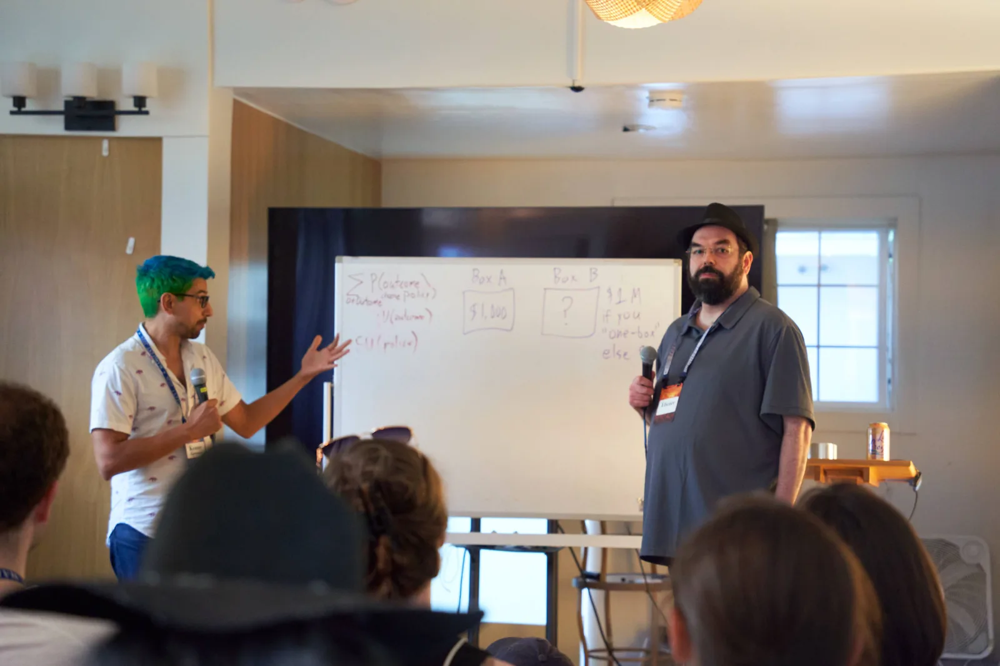

Similarly, when writing instruction manuals, such as the volunteer handbook, if the language is not put maximally concisely and clearly, the consequences may be:
- The lives of the (altruistic and kind) volunteers will become a lot more difficult and confusing
- A lot of volunteers will not read the handbook because the language was too annoying to process
- the event will be worse
having things I really want to write about and becoming a lot busier helped me become much more sincere in my writing
- The two months organizing manifest was probably the most busy I’ve been up to this point in my life. (Maybe in competition with cramming for the SAT in high school). I remember a few instances instances of writing docs on some random topic while I was supposed to be sleeping / working at like, 2AM, out of “I really want to write this” rather than “I feel that I should be the sort of person that writes things”. I think in sum these essays were very sincere. eg. todo: link to please stop saying EA = utilitarianism
I’ve largely gone out of the habit of theorizing about empirically verifiable theories, and I developed a much better algorithm for breaking down ideas into actionable parts. writing Manifold market resolution criterion also helped towards this end. - todo: say more about this point and give examples
On modeling others / users
- College students are generally quite eager to please as they are getting graded
- When an application is confusing, when an application is difficult to use, etc, they seem to generally have motivation to navigate through the confusion
- “It is never the professor’s fault for making something confusing”
- However, I have realized that this is entirely not the case when it comes to customers / users.
- When an application is confusing, when an application is difficult to use, etc, they seem to generally have motivation to navigate through the confusion
- todo: add thoughts about airtable forms, emails, speakers, communication overhang, etc
On wanting to do not-useful-philosophy that is also not fun
todo: complete this section
- theorizing about questions in a manner that is neither productive nor enjoyable
- theorizing about easily empirically verifiable domains
Many projects in contemporary philosophy are artifactual puzzles of no abiding significance, but it is treacherously easy for graduate students to be lured into devoting their careers to them, so advice is proffered on how to avoid this trap.
Philosophy is an a priori discipline, like mathematics, or at least it has an a priori methodology at its core, and this fact cuts two ways. On the one hand, it excuses philosophers from spending tedious hours in the lab or the field, and from learning data-gathering techniques, statistical methods, geography, history, foreign languages ..., empirical science, so they have plenty of time for honing their philosophical skills. On the other hand, as is often noted, you can make philosophy out of just about anything, and this is not always a blessing.
the logic of the business man demands that all commercial resources shall be exploited with the utmost rigour and efficiency to bring about the destruction of all competition and the sole domination of his own business, whether that be a trading house or a factory or a company or other economic body war is war, l’art pour l’art, in politics there’s no room for compunction, business is business,—all these signify the same thing, all these appertain to the same aggressive and radical spirit, informed by that uncanny, I might almost say that metaphysical, lack of consideration for consequences, that ruthless logic directed on the object and on the object alone, which looks neither to the right nor to the left; and this, all this, is the style of thinking that characterizes our age.
On not only meeting your heros but inviting them to your event and getting to request them to talk about whatever you want to listen to
Rach, the organizer of Manifest 2025, said that one of the great things about running an event like this is that “You can just email whoever you want”, and this was indeed the case. It felt rather surreal seeing lots of my favorite people that I admired a lot all gathering at an event I was involved in organizing, and I even get to pitch them on what I wish for them to talk about! This is super cool.
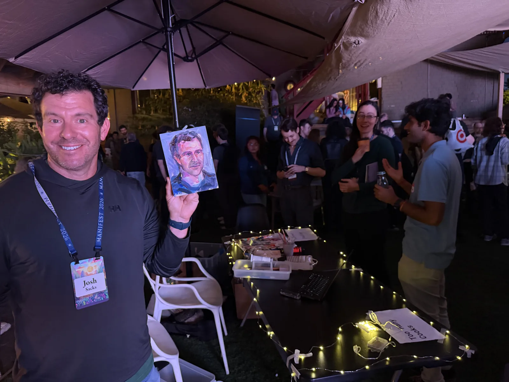
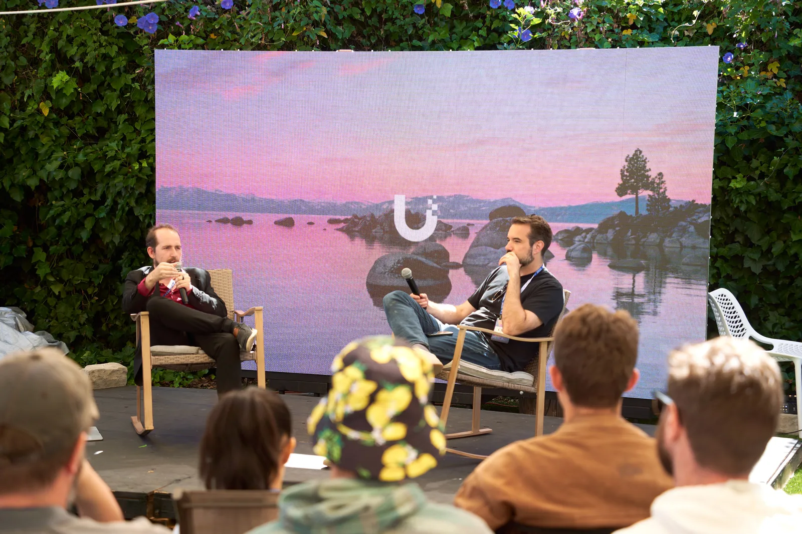

Others
Make it low friction for others to say no to your asks
todo: clarify this point

- When I first started this job I had vastly underestimated the amount of time it would take, and how much extra time I would want to spend on improving the event. I had considered taking another fairly challenging job in parallel, which I quickly realized would have been a great mistake.
- Have only 1-2 projects at a time
- The Top Idea in Your Mind
- todo: looking for a generalizable description / framework to deciding when to pick up another side project (as, the ideal amount of size projects is not necessarily 0)
- Fake thinking and real thinking - Joe Carlsmith
- Realizing I need to do this real thinking stuff….when there are real feedback loops and real stakes to my decisions
- and when there are actual decisions I need to make
- todo: add more to this point
Event running
Go to someone else’s event and take notes for your event
Thank you Ben Pace, Skyler, Ruby, and Alexandra
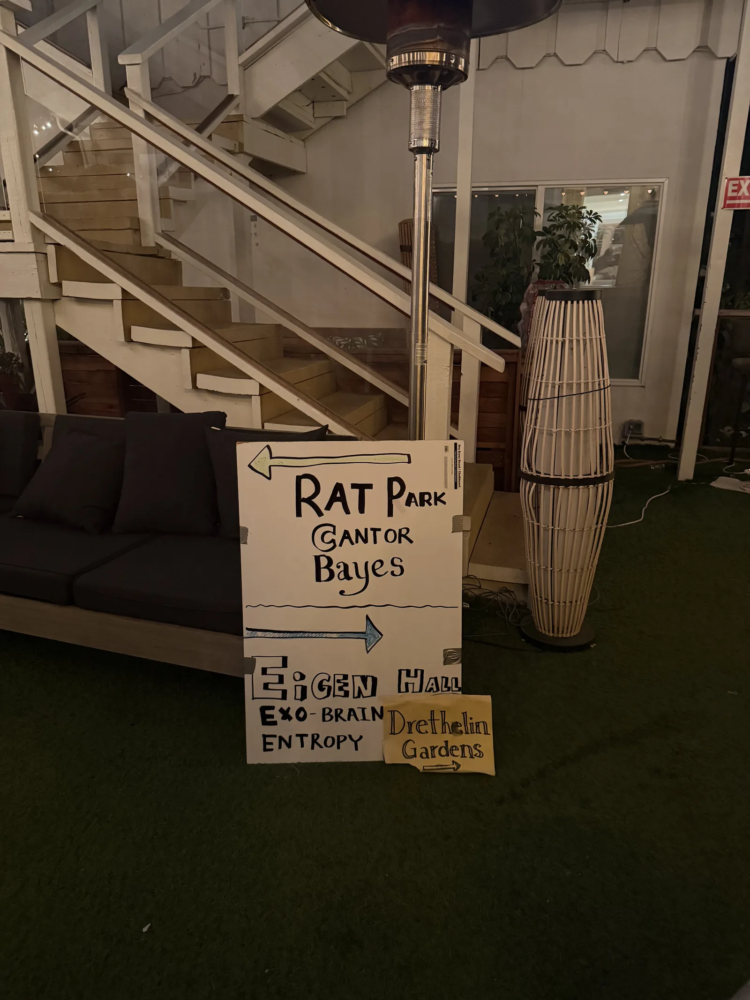

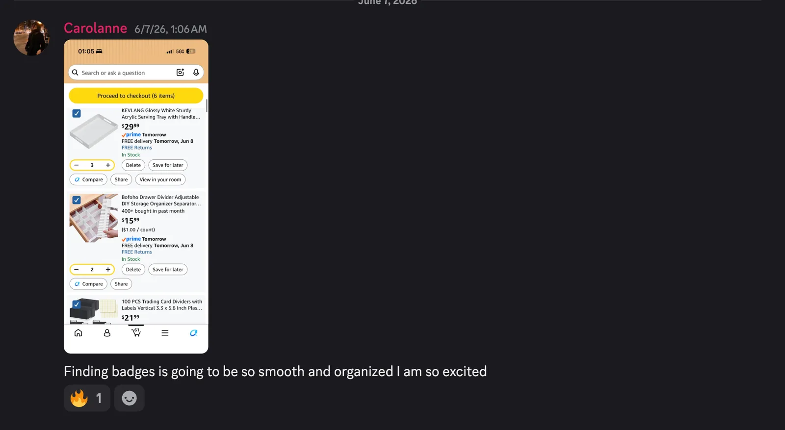
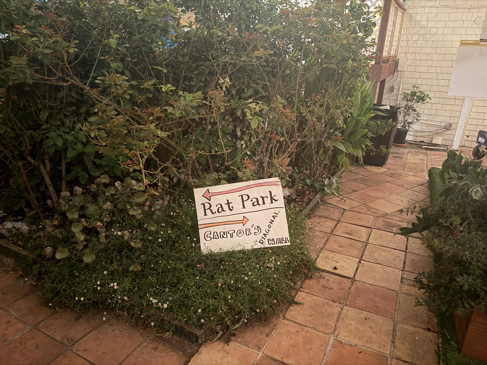
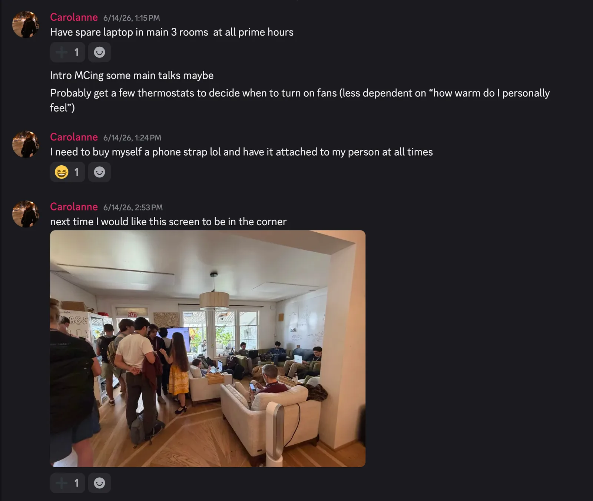
- how to make minor improvements to an event? Temporarily embody someone whose biggest hobby is complaining about every minor inconvenience and fix those inconveniences
- make sure nothing is catching on fire while you make said minor improvements (see: task prioritization)
- buying people things that they didn’t know they wanted seems to make them unreasonably happy. (something something consumerism)
- eg. ice cream (food in general)
- vegan ice cream
- sunscreen
- big misting fans
- cough drops
- index cards??
- generally, the sorts of things Lighthaven provides
- eg. ice cream (food in general)
- incentivize desirable behavior instead of telling people how to behave
- eg. if it is very hot, position fans / umbrellas / air conditioning at locations where you want people to gather around, not at locations you don’t
- Similarly, eg. position displays of information at locations where you want people to stand around, and not at, eg. the center of the main hallway where everyone is trying to pass through
- I need to attach my phone and camera to my person at all times or only wear clothing with pockets.
- I think I lost the equivalent of 5+ potential conversations' worth of time trying to find my phone at Lighthaven
- I feel somewhat regretful not spending any time talking to lots of (or ~any of) the cool people at Manifest
- There is maybe more value generated talking to attendees than eg. repositioning patio umbrellas

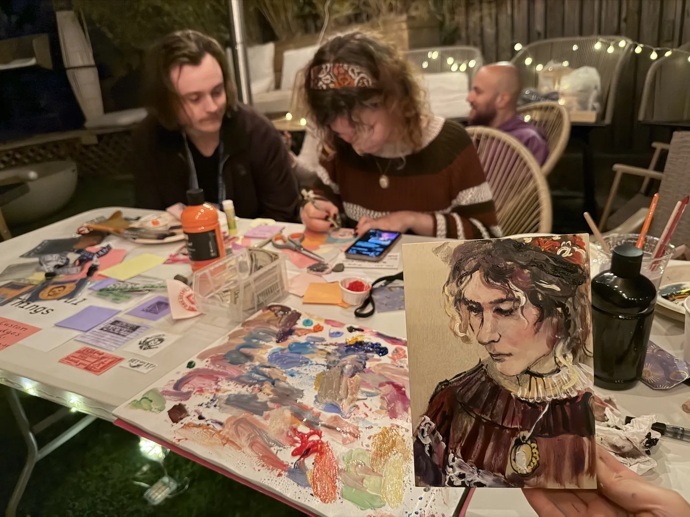
Signs:
- in some large conference venues, Wifi signs (/ similar useful printed info) can be placed put on top of trash bins, as they’re often already optimized for being at the most visible & non disruptive locations
- trying to plan venue signage via envisioning where people might be lost on my computer feels like learning how to ride a bicycle through instructions given by claude. One may go to the venue and actually view for oneself where signs are needed (optional: make them on the spot? This was so fun)
- Saul is entirely correct about airport signs, TLDR: don’t use a map and make your signs 5x larger and larger still
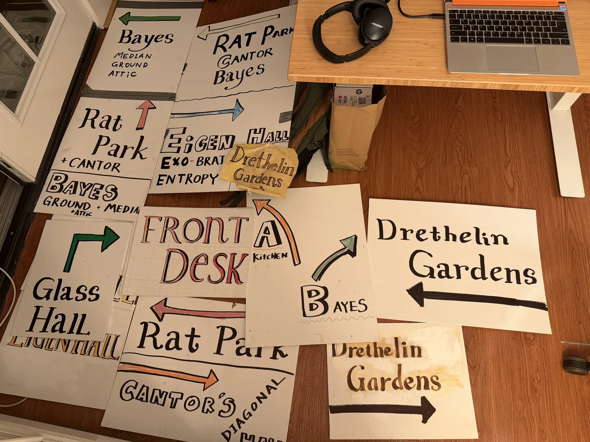
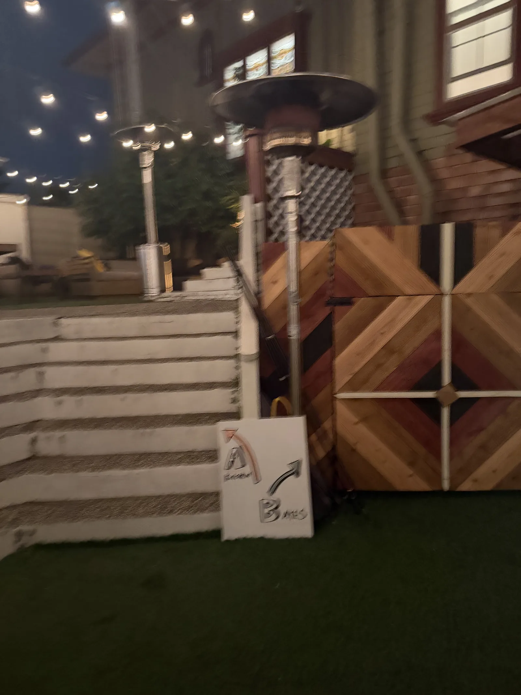
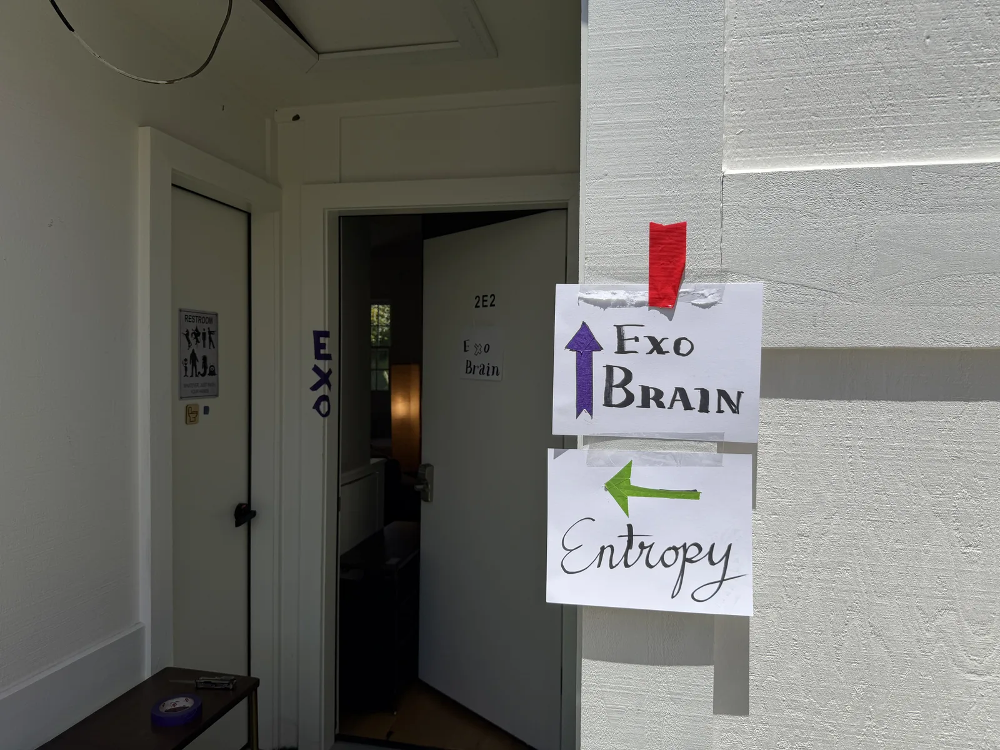
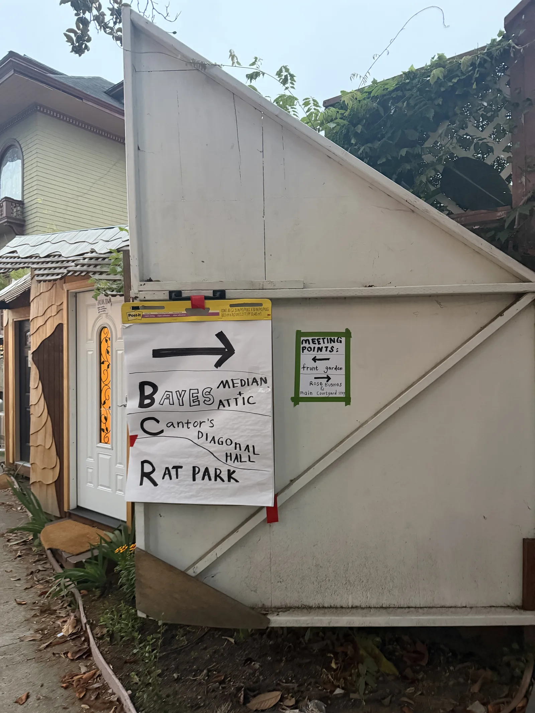

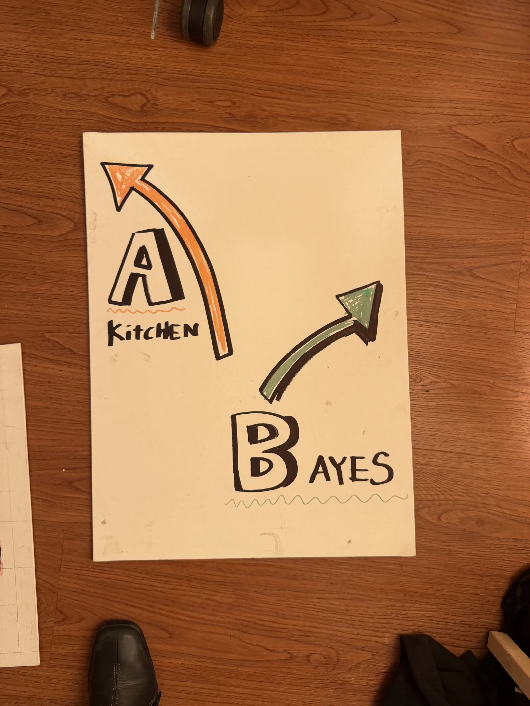
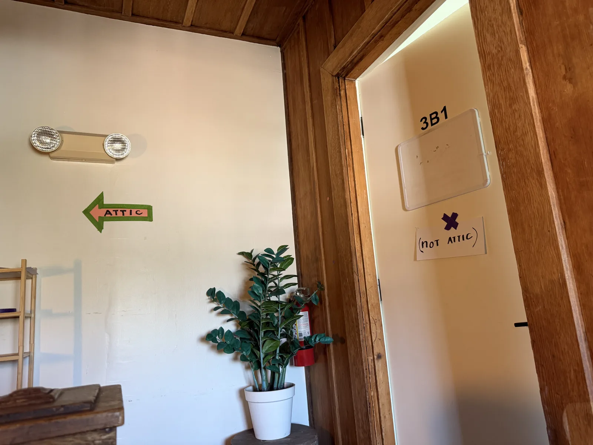

When there are a lot of people gathered together, the room will likely become insufficiently ventilated.
this causes the room to feel stuffy and maybe the people to become less mentally alert due to the rising CO2 levels. This is especially significant when you are hosting an event where you want the attendees to intellectually engage with whatever is happening.
how to position fans to make emergency ventilation / cooling system
- don’t position the fan towards people
- Have multiple fans, situate them near windows / doors, situate some inward to bring in fresh air, and others outward to bring out air.
TODO: explain this clearer
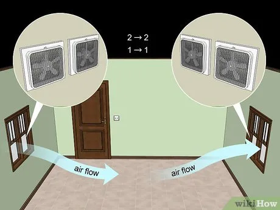
TODO: add thoughts about food, toilets, prioritization problems
Things I wish to improve on:
- task prioritization
- There are so many small optimization problems I can and want to work on, but I should make sure nothing significant is catching on fire
- I tend to over index on the importance of optimizing whatever part of the event I happened to have observed
- paraphrased feedback from two people that worked with me:
- during the days of the event, I seemed to often be working on the local problem, such that it is unclear whether I was aware of the larger problems happening (eg. in the case of Manifest, something was going wrong with the A/V and I seemed to be working primarily on a series of local problems)
- When most people hit a problem, they work on it for a bit, realize they can't easily solve it alone, and escalate. When I hit a problem, I work on it for a bit, realize I can't easily solve it alone, and keep working on it
- (which is in fact not the most time efficient thing. Also, see: delegating tasks)
- delegating tasks
- I find it extremely difficult to delegate tasks, especially when it is a task that I am capable of doing myself
- the overhang of communication is a bit annoying
- some part of this can be mitigated by learning better communication habits
- but a remainder of my difficulty of delegating tasks is due to “wanting to stop other people from doing their jobs”
- The fact that I am able to do it does not pose sufficient condition for not hiring someone else to do it
- I find it extremely difficult to delegate tasks, especially when it is a task that I am capable of doing myself
- working on “being in a chill / relaxed-ish mood” during the event, to the extent that the organizer’s mood can effect the vibe of the event
- Actually being chill (and thus appearing as such)
Gratitudes & things I’ve learned from various people:
Todo: complete this section Austin, Winter,
thank you, Saul, for teaching me how to perform my first job from scratch
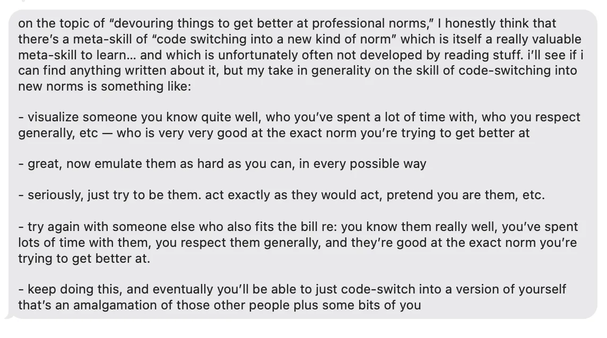
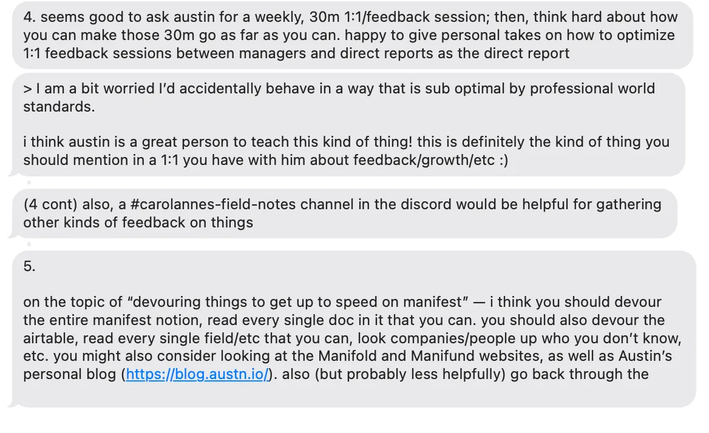
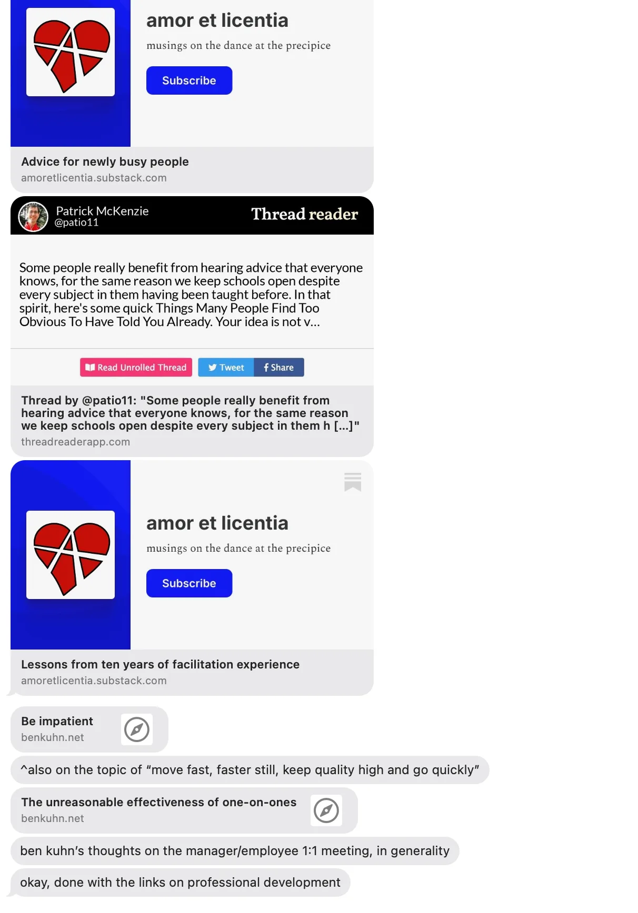
Some links I found helpful:
Mistakes often made by inexperienced event organizers
Some early lessons from the world of work | Rohan's Rambles
https://mishaglouberman.substack.com/p/everything-you-did-to-make-your-conference
Startup skills & where to learn them
Speed matters: Why working quickly is more important than it seems « the jsomers.net blog
https://sashachapin.substack.com/p/how-to-be-less-neurotic-about-getting
https://lawsen.substack.com/p/better-positive-feedback?r=1eev15&utm_medium=ios&triedRedirect=true
Trust as a bottleneck to growing teams quickly
Summary of ‘Time management’, by Randy Pausch
https://worktopia.substack.com/p/how-to-hire-low-experience-high-potential?curius=2046
https://amoretlicentia.substack.com/p/advice-for-newly-busy-people
The unreasonable effectiveness of one-on-ones
There are only four skills: design, technical, management and physical — LessWrong
How I buy things when Lightcone wants them fast — LessWrong
https://amoretlicentia.substack.com/p/lessons-from-ten-years-of-facilitation
21 Facts About Throwing Good Parties
Some reasons to work on productivity and velocity
https://mishaglouberman.substack.com/p/the-reason-most-conferences-are-bad